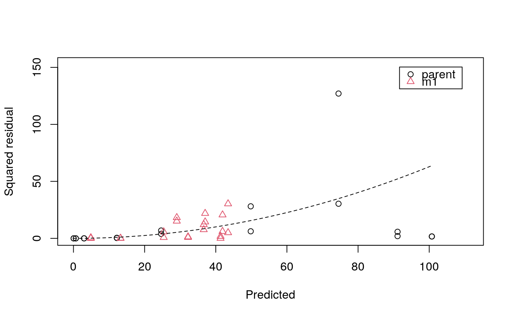

R/mkinerrplot.R
mkinerrplot.RdThis function plots the squared residuals for the specified subset of the
observed variables from an mkinfit object. In addition, one or more dashed
line(s) show the fitted error model. A combined plot of the fitted model
and this error model plot can be obtained with plot.mkinfit
using the argument show_errplot = TRUE.
A fit represented in an mkinfit object.
A character vector of names of the observed variables for which residuals should be plotted. Defaults to all observed variables in the model
plot range in x direction.
Label for the x axis.
Label for the y axis.
Maximum value of the residuals. This is used for the scaling of the y axis and defaults to "auto".
Should a legend be plotted?
Where should the legend be placed? Default is "topright". Will
be passed on to legend.
Colors for the observed variables.
Symbols to be used for the observed variables.
Should a frame be drawn around the plots?
further arguments passed to plot.
Nothing is returned by this function, as it is called for its side effect, namely to produce a plot.
mkinplot, for a way to plot the data and the fitted
lines of the mkinfit object.
# \dontrun{
model <- mkinmod(parent = mkinsub("SFO", "m1"), m1 = mkinsub("SFO"))
#> Temporary DLL for differentials generated and loaded
fit <- mkinfit(model, FOCUS_2006_D, error_model = "tc", quiet = TRUE)
#> Warning: Observations with value of zero were removed from the data
mkinerrplot(fit)

# }